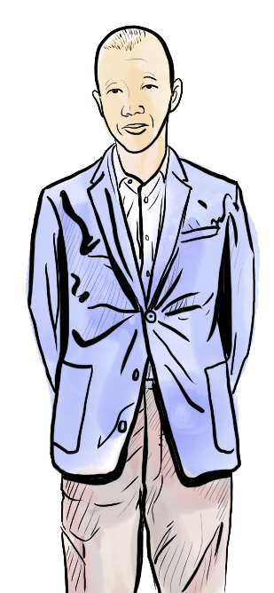
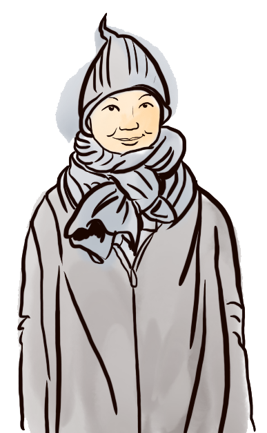
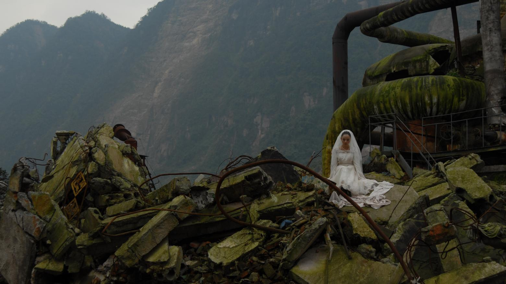
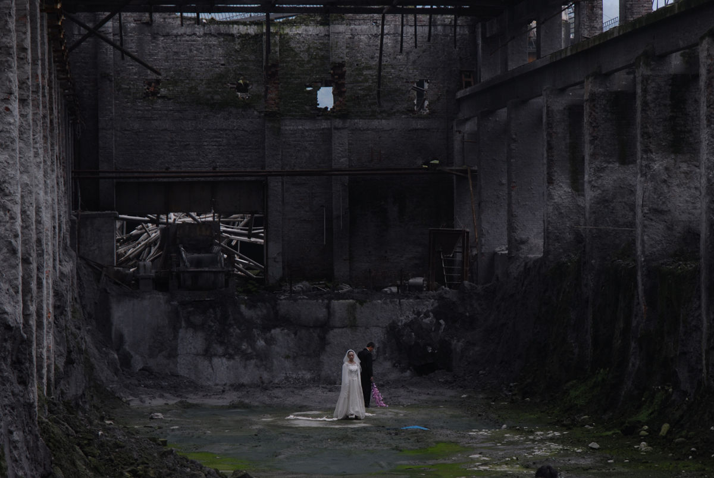
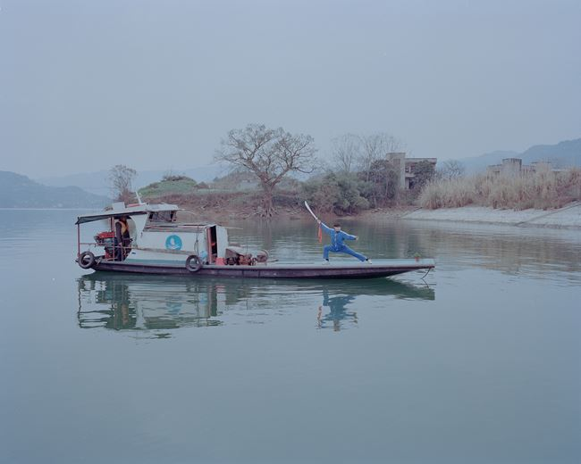
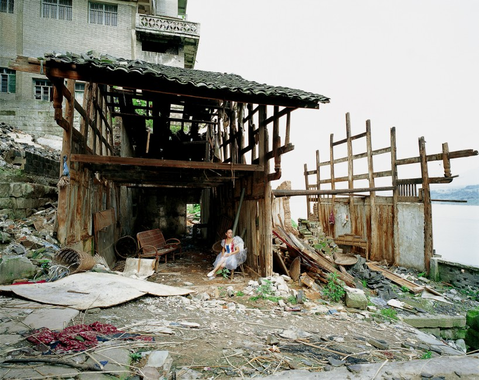
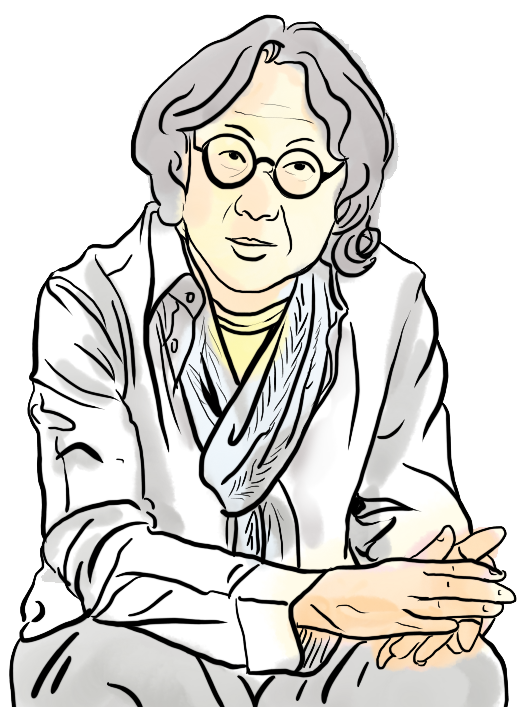
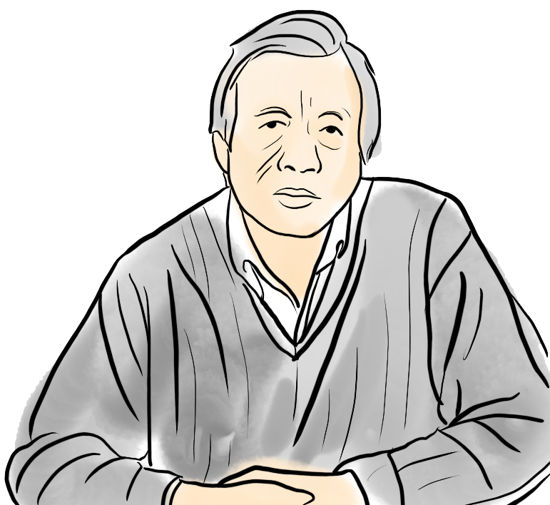
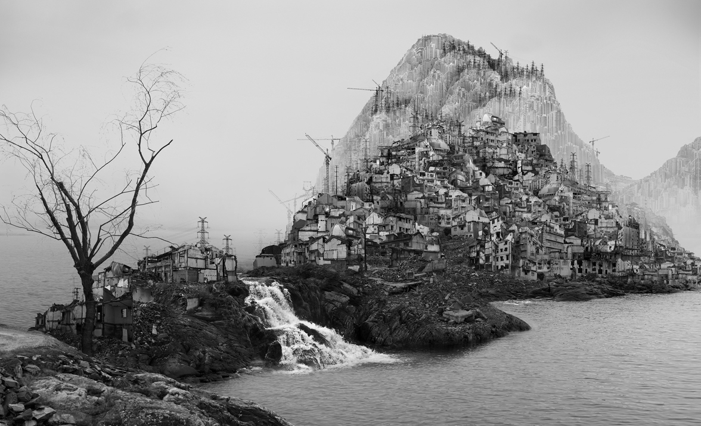

The Three Gorges Dam was an extremely controversial construction project that had been initiated in 1994. It was intended to control the flooding of the Yangtze River and generate hydroelectric power to fuel China's rapid development and economic boom. While this dam has achieved these goals of flood control and providing the nation with a new source of "greener" energy, its construction has resulted in the displacement of at least 5 million people. Furthermore, critics have argued that in the long run, the Three Gorges Dam will cease to be productive as silt and sediment accumulation upstream will eventually clog ports, intensity flooding, and thus rendering the Yangtze impassable. Additionally, as engineering limitations will prevent energy from being harnessed efficiently.
On an environmental scale, the sediment and silt build-up resulting from this dam has damaged and reduced aquatic biodiversity. Additionally, the erosion induced by the rising water from the dam has caused frequent major landslides that has damaged towns and led to further relocation of former residents.
Consequently, this controversy has prompted artists like Ji Yunfei, and Chen Qiulin to create work in response to the social and environmental issues caused by the Three Gorges Dam.
Cai Guoqiang & The 9th Wave
As a artist who cares deeply about the global environment and has international acclaim, Cai Guo Qiang has made many artworks and installations that address the issue of environmental degradation, especially in relation to China. Though his art comes in various media, from gunpowder to ink, his background as the son of a traditional landscape painter has seeped into some of his artwork and shaped his view of the human-nature relationship. This is particularly evident in the piece called in his 9th Wave exhibition called Silent Ink (a play on Rachel Carson's Silent Spring) which takes the form as a physical manifestation of 山水画. For this installation, Cai created a black ink pond by excavating the floor of the former power plant where his work would be presented and "filled [this artificial depression] with thousands of gallons of the pitch-black ink used for traditional calligraphy and brush painting" (Schell). To further evoke the sense of 山水画, he piled up the rubble from the excavation to create an impression of the mountains often found in these classical landscape paintings.
In this way, Silent Ink draws on aspects of previous cultural traditions and places them on a contemporary scale to reflect on the current environmental reality, which in this case refers to the countless polluted lakes and rivers in China that have become too toxic even for industrial use.
Likewise, in The Bund Without Us, Cai used gunpowder ignited on paper and brush to depict a scene showing what Shanghai's riverfront would look like once reclaimed by nature centuries after humans vanish. In addition to rendering buildings on this city's skyline in ruins, the sepia tone and splotches throughout the work created by the use of gunpowder makes this depiction of the future seem to be from the past.
With this piece, as with Silent Ink, Cai Guoqiang wanted to "conjure the spirit in literati paintings" and evoke a feeling of nostalgia for a time when "people lived humbly and in harmony with nature." (Schell) Consequently, by recalling aspects of Chinese cultural history, The Bund Without Us sought to raise awareness of environmental problems by inspiring people to think about and compare the current human-nature relationship with that of the past.
The piece incorporating 99 sculpted animals placed on a fishing boat, The Ninth Wave, is Cai Guoqiang's response to the tide of 16,000 dead pigs discovered in Shanghai's Huangpu River (in 2013). Outraged by this event, which was just as much a health concern as it was an environmental concern (regarding pollution and waste), Cai was inspired to create this sculpture as the title piece for his exhibition The Ninth Wave. This interactive piece, which had sailed from Cai's hometown, throught the Huangpu River to the exhibition's location in Shanghai is reminiscent of the story of Noah's Ark. It's as though these sick-looking fabricated animals are trying to escape from the reality of current environmental degradation humans have wrought. It is interesting to see that unlike some of his other pieces in this series, which draws on Chinese traditions, this work relates to a concept not isolated to China. In this regard, The Ninth Wave not only shows the impact of globalism in contemporary art (which was mostly absent from traditional 山水画) but also brings up the fact that environmental issues, too, are no longer isolated to certain countries in a globalizing world.

Although this latter piece did not incorporate themes relating to traditional aspects of 山水画, I chose to render it in my scroll as it fit well into the scene with the water gushing from my depiction of the Three Gorges Dam. Coincidentally, This image is accompanied by a series of dead pigs and other forms of pollution to in effort to incorporate some of the environmental and social issues Cai (and other contemporary artists as shown later in the scroll) tackled with their work. Consequently, this controversy has prompted artists like Ji Yunfei, and Chen Qiulin to create work in response to the social and environmental issues caused by the Three Gorges Dam.
The Bund Without Us
Silent Ink
99 Animals on The Ninth Wave
Chen Qiulin: Photos & Videos
For many years, Chen Qiulin has been exploring and documenting the urbanization occurring in her home-province, Sichuan, through art. Her work focuses on the rapid changes both the Chinese people and landscape have been experiencing in reaction to industrialization, modernization, and the associated materialism. In this manner, Chen's art reveals different aspects of the changing relationship between people and nature. Though using different, and rather modern media, aspects of Chen's artwork are reminiscent of traditional 山水画. This is evident through her tendency to depict people in her videos (such a as Peach Blossom) and photos (like Tree from the series titled Peppermint) as small in relation to their larger surroundings, which recalls the concept of people being a part of the nature and the landscape as a whole.
As someone personally effected by the Three Gorges Dam, half her hometown had been submerged as a result, Chen Qiulin has also explored the social and environmental impact of this controversial project through four videos corresponding with the four phases of construction and united under the common theme of displacement: Rhapsody on Farewell; River, River; Color Lines; and The Garden. Through each of these pieces she conveys changes in her personal feelings toward the Three Gorges Dam as construction happened by depicting scenes of people, including herself, against a background of the destruction caused (Upstream Journal).

In my scroll, I chose to depict her photograph I am an Angel No.2 (which is also part of her video Color Lines) as a way to highlight the style of her work and prevailing themes of destruction, displacement and the smallness of human beings in relation to both nature and built landscapes. The placing of this image, behind the man on a float and facing the water was intended to show how Chen Qiulin and her artwork had been influenced by the Three Gorges Dam (which is the source of the water and inundation in this part of my scroll).

Still from Peach Blossom (2009)

Still from Peach Blossom (2009)

Peppermint: Tree

I am an Angel No.2
Xu Bing's Phoenix
In 2008, Xu Bing was commissioned to create artwork to decorate the atrium of the new World Financial Center being constructed in Beijing. However, this project took a turn when he noticed the poor working and living conditions at the construction site. The irony that this building, supposedly a symbol of progress and modernity, was surrounded by debris, despair, and poverty revealed the social and environmental costs of China's rapid development. This stark contrast inspired Xu Bing to collaborate with construction workers to sculpt a pair of phoenixes using the materials salvaged from the site, including "demolition debris, steel beams, tools, and remnants of the daily lives of migrant workers" (MASS MoCA). In this way, the sculpture became a commentary on the growing discrepancies and wealth gaps within Chinese society as Xu observed at the construction site (where migrant workers labored to without recognition to build an edifice symbolizing the luxurious lifestyle they could not afford).
On the other hand, this artwork could also be interpreted as a sign of hope for a better future as the two-fold phoenix of Chinese legend represents unity and good fortune. In this regard, the help of the migrant workers in building this sculpture (and in the construction of the World Financial Center) showed the unity of people necessary to make things possible. Additionally, the use of construction debris could also be seen as a play on this symbolism as it called for the combination (or unity) of scraps and other waste materials to create something new and meaningful. Consequently, when considering the meaning of the phoenixes in relation to the processes involved in the building of Xu Bing's sculpture, this monumental artwork appears to be more than just a critique of social and environmental issues brought by China's rapid progress. In this way, the sculpture also becomes a call for people to work together with each other, and (to some extent) with the environment to bring good fortune.

It is in this regard that I depicted the phoenix sculpture to be "flying" in this scene with some migrant workers resting and contemplating amongst the debris as the shiny new World Financial Center was being built.
Unfortunately, by the time the phoenix sculptures had been completed (around 2010), the building developers who commissioned this project decided to back out as the piece did not look flattering and was too politically charged, especially in light of the recent 2008 financial crisis.
Ji Yunfei & the Three Gorges Dam Migration
Through his paintings, Ji Yunfei has been particularly vocal in condemning the construction of the Three Gorges Dam for the social-environmental problems it has wrought upon the region. This was the main focus of his signature artwork, Three Gorges Dam Migration (2009), which took the form of a 32 feet long scroll. Much like his other works, this piece is based on traditional Chinese landscape paintings, which he uses to "explore the utopian dreams of Chinese history, from past collectivization to new consumerism" (Genocchio). In this regard, his art addresses social and environment issues prevalent in China by evoking nostalgia for a time when nature and human beings lived in harmony. Thus, by presenting contemporary problems in this style, Ji Yunfei's artwork tries to raise awareness by prompting viewers to compare the past with the present and consider current issues in relation the traditional Chinese perception of nature.
It is in this manner that Ji Yunfei painted Three Gorges Dam Migration in response to the forced resettlements and miserable conditions minority groups faced in the wake of the dam building. Through its format, this painting is reminiscent of traditional 山水画 with its use of light, translucent colors; incorporation of natural elements like leaves, water, trees, and rocks along with people; and its form as a lengthy scroll surrounded by calligraphic text on both sides. However the content of the composition reveals contemporary problems instead of the peaceful landscapes typically found in 山水画. The scroll is busy with images of people and their belongings both packing and getting ready to leave their home so the dam could be built. Moreover, this jumble of displaced or soon-to-be-displaced individuals and their expressions provide a holistic view of the wide range of local reactions and, in turn, emphasize the trauma of such resettlement projects.
In this regard, by pointing to the social impacts of this dam, Ji Yunfei's work makes a further point about the differences between past and current nature-human relationships. As exemplified by 山水画, the people of dynastic China (especially the literati) considered themselves to be a part of nature and often sought refuge in the landscape. In the contemporary world, however, people have a more active role in the environment despite their supposed detachment from the natural world. Consequently, reveals how people continue to impact and are, in turn, impacted by the forces of nature regardless of changing perceptions and relationships.
My rendition of his work in this scroll does not really seem to resemble the images depicted in Three Gorges Dam Migration. For this, I decided to take a different approach and show the theme of displacement and forced relocation present in his painting. I attempted to show this through drawings of these three people: a little girl and her father carrying what little belongings they have walking towards the unknown, and a person in the bottom of the page sleeping on the floor surrounded by their belongings.
The Dong Qichang Project
In his series called the Dong Qichang Project, Beijing-based contemporary artist Shang Yang incorporates references/recalls the work of classical 山水画 to call attention to the current environmental crisis by highlighting the changing attitudes and relationships between people and nature. In this regard, the project develops in different phases; one of which incorporates pieces that seem to be master copies the work of well-known traditional painter Dong Qichang. For the other phase(s), Shang Yang applies his own style in emulating the Dong Qichang's 山水画, using mixed media with oil paints to mold traditional landscape pieces to fit into the modern world. In this case, the nature depicted in this phase is jarring, "mottled, no longer a beauty" (Min'an) and devoid of the tranquil comforts often associated with the nature presented by 山水画. Here, nature becomes "a mirror of contemporary people [and society], it has scarred and wrinkled skin just like ours; its fractured pieces suggest the state of humans today" (Min'an). Thus, by juxtaposing the traditional representations of nature with those based on his own style and current environmental attitudes, these different phases of the Dong Qichang Project highlight the drastic change in how humans interact with the natural world. In this regard, Shang Yang presents a series of artwork that contrasts former notions of people being in harmony with nature with the today's endless demand and exploitation of nature. Through this project, hopes to provoke critical thought about the current state of the environment in a way that would not only raise awareness among viewers, but also inspire them to take action to improve conditions (评论:王雪芹：偶然与必然：被选择的董其昌).
In my rendition of the Dong Qichang Project on this virtual scroll, I switched to using a different set of brushes to simulate the textures, and consequently, the more jarring effects presented in Shang Yang's multi-media work.

A phase of the Dong Qichang Project, resembling classical 山水画
Part of the more contemporary phase
Yang Yongliang: Painting or Photography?
In a manner similar to that of Chen Qiulin, Yang Yongliang's artwork incorporates photographs that reveal the changes caused by China's accelerated development and urbanization, especially in his hometown Shanghai. However his approach is very different from that Chen and is, instead, rather reminiscent of Xu Bing's Background Story. This is evident in pieces such as View of the Tide (2008), which initially appears to be a typical rendition of 山水画 with monochromatic trees, bodies of water, and mountains shrouded in mist on a handscroll. Upon closer examination, it becomes evident that Yang did not use the traditional materials of ink and paper, but rather a collection of edited photos he took to create this piece. In this way, his process further reflects experiences faced in a rapidly developing China in the digital, contemporary period. To make work like View of the Tide, Yang edited and layered select photographs he had taken of urban landscapes (such as buildings and demolition sites) in a way that took the form of the natural landscapes typical of 山水画. Mountains, for example, were composed of layers and layers of photos of various buildings and what seemed to be trees from afar are actually power towers. Through this, Yang shows how the landscape has transformed from natural elements of bygone days to the familiar scenes of modern anthropogenic life filled with "concrete towers...and the atmospheric haze of pollution" (Carter).
Consequently, through this adaptation and reinterpretation of traditional art through a modern lens using technology, Yang Yongliang has created work that preserves this classical style of painting and reflects the "trajectory of development in a typical Chinese city" (Noey) like Shanghai. Essentially, by "painting" with digital photography, he is simultaneously documenting reality and responding critically to the rapid urbanization that has demolished both the more recent, physical and the conceptual past of Chinese cultural and societal history embedded within the towns and cities.
In representing Yang Yongliang's artwork on my scroll, I wanted to paint a part of the landscape by compiling and layering photographs of urban elements. However, as the process was unfamiliar to me and seemed rather time consuming, I decided to use images of his work that I found to build this specific part of the landscape. Through this mini-emulation of Yang's work, I had to apply a similar process of photo-editing (namely erasing the background and the edges) and layering (and some more light erasing) to connect the drawn part of my scroll with this portion.
Scene from View of the Tide (2008)

Time Immemorial--Flooding 2016 Here you can see how images of houses and buildings are being stacked in the shape of a mountain.
Behind the Scenes
At first, it seems that Xu Bing's piece Background Story: A New Approach to Landscape Painting is yet another master copy of "Dwelling in the Fuchun Mountains by Huang Gongwang, one of the Four Yuan Masters" ("Xu Bing: Background Story: A New Approach to Landscape Painting"). However, upon closer look, it becomes clear that this piece was not created with paper and ink but rather on a light box. On the other side of this work, it is revealed that the "painting" seen in the front is actually an illusion created by the "hundreds of LED lights and the dried grasses, plastic bags, sticks, rocks, tape, and all manner of detritus that cast the shadows and create the shapes that depict the painting" ("Xu Bing..."). This use of various materials to create Background Story is also reminiscent of his use of scrap materials and debris in the construction of his phoenix sculpture. In this regard, the illusion of a typical 山水画 created by various plants and debris evokes the traditional harmonious relationship people had with nature. Thus, it seems that, Xu Bing, much like Yang Yongliang, is exploring a prominent part of China's cultural history with a different materials and a new approach. In this case, he appears to associate environmental issues, such as pollution, with the a detachment of the people from the roots of their past.
Consequently, by touching on the tradition of 山水画, Xu Bing's Background Story attempts to reclaim and connect with the past in effort to remind people of their heritage and the deep cultural connections that existed between humans and nature in China.
With this final scene, I wanted to depict a version of Xu Bing's light-box piece. However, as I wanted the scroll to have some sense of unity despite the various styles, "brushes", and scenes, I ended up making a rendition of Huang Gongwang's Dwelling in the Fuchun Mountain that Xu's contemporary artwork was based on. In this way, by having the final part of the scroll appear in the traditional 山水画 style I incorporated at the beginning, I hope this piece reflects the circularity and connectivity of the world discussed in early Chinese philosophy.
Xu Bing showing the front of Background Story: A New Approach to Landscape Painting

 The Bund Without Us
The Bund Without Us